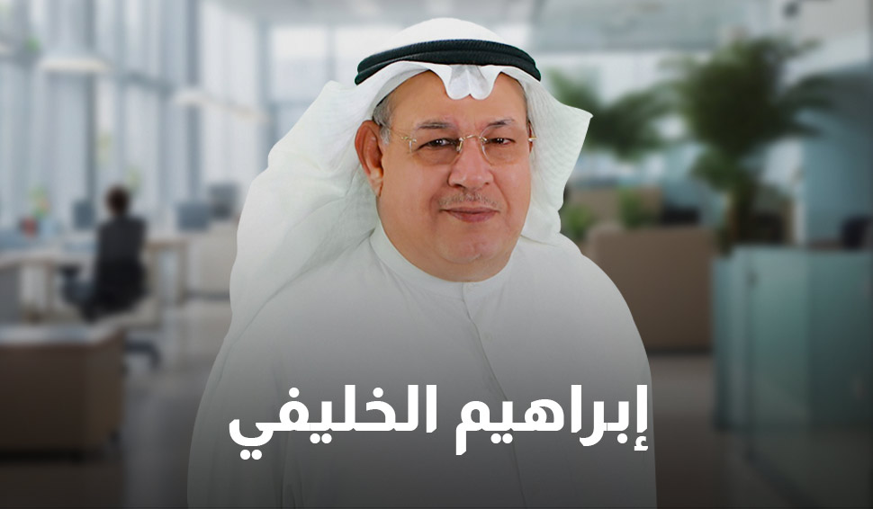
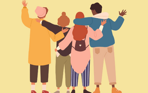
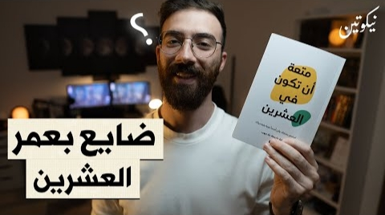
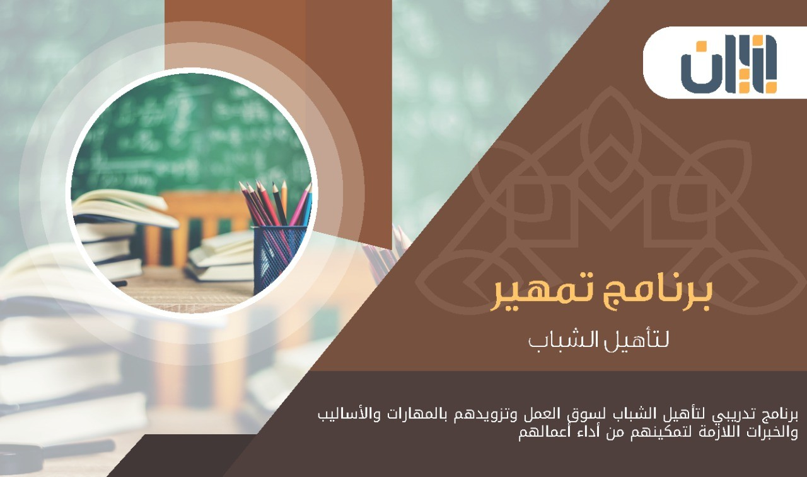
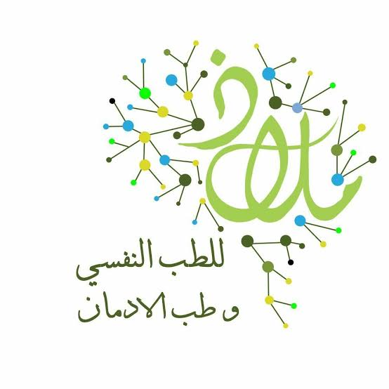

منصة
الدكتورز(aldoctorz)
تضم قائمة تضم 335 طبيبًا نفسيًا متخصصًا في القاهرة، مع معلومات الاتصال وتفاصيل
العيادات.
فترة المراهقة
هي مرحلة انتقالية بين الطفولة والرشد ، تبدأ عند 11 وتستمر حتى 21. تتضمن تغيرات جسدية وعقلية واجتماعية كبيرة ، حيث يكتسب الأفراد استقلالية ويتطورون عقليًا واجتماعيًا ليكونوا مستعدين للحياة كبالغين.
التحديات الشائعة في فترةالمراهقة
التحديات الاجتماعية
- 1.ضغط الأقران: يمكن أن يكون ضغط الأقران إيجابياً أو سلبياً، حيث قد يشجع المراهقين على السلوكيات الإيجابية أو يزج بهم في سلوكيات سلبية مثل تعاطي المخدرات أو السرقة.
- 2.مخاطر مواقع التواصل الاجتماعي: تزيد هذه المواقع من خطر التنمر الإلكتروني ومقارنة الذات بالآخرين، مما يؤثر على تقدير الذات والصحة النفسية.
- 3.العلاقات مع الأهل والأصدقاء: تواجه العلاقات خلال هذه الفترة تحديات جديدة، مما قد يؤثر على الثقة بالنفس والعلاقات الاجتماعية.
التحديات السلوكية
- 1.ضغط الأقران: يمكن أن يكون ضغط الأقران إيجابياً أو سلبياً، حيث قد يشجع المراهقين على السلوكيات الإيجابية أو يزج بهم في سلوكيات سلبية مثل تعاطي المخدرات أو السرقة.
- 2.السلوك العنيف والمضايقات: يمكن أن يتأثر المراهقون بسلوكياتهما نتيجة للضغوط والتوتر الذي يعانون منه.
- 3.الانخراط في سلوكياته غير الصحية مثل التدخين والإدمان الرقمي.
التحديات النفسية
- 1.الاكتئاب والقلق: يعاني حوالي 8% من المراهقين من الاكتئاب الشديد، ويُعتبر القلق مشكلة شائعة بسبب الضغوط الأكاديمية والاجتماعية.
- 2.اضطرابات الهوية والتوجيه الشخصي: يسعى المراهقون لتحديد هويتهم الخاصة، مما قد يسبب ارتباكًا وضياعًا إذا لم يتمكنوا من العثور على بيئة داعمة.
- 3.شعور بالعزلة والنسيان نتيجة لاستخدام وسائل التواصل بشكل مفرط.
التحديات الصحية
- 1.السمنة وزيادة الوزن المفرطة: يعاني حوالي 20% من المراهقين في الولايات المتحدة الأمريكية من البدانة، مما يزيد خطر الأمراض المستعصلة مثل أمراض القلب والسكرى
- 2.مشاكل الصحة الجسدية الأخرى مثل مشاكل الجهاز الهضمي والإجهاد المستمر.
- 3.الإهمال الصحي: عدم الالتزام بنظام غذائي صحي وتجنب ممارسة الرياضة بانتظام.
التحديات التعليمية
- 1.ترك المدرسة: انسحاب بعض الطلاب خلال فترة المراهقة بسبب الضغوط الأكاديمية أو عدم الرضا عن بيئة المدرسة.
- 2.الضغط الأكاديمي: التوقعات العالية التي تواجهها المدرسة والأهل تجعل بعض الطلاب يشعرون بالإرهاق النفسي والإحباط.
- 3.زيادة الحمل الدراسي: يتطلب ذلك قدرة كبيرة على التخطيط وإدارة الوقت بشكل فعال لتجنب التوتر الزائد.
التحديلات المتعلقة بالهوية والانتماء
- 1.تشكيل الهوية: يسعى كل مراهِق إلى تشكيل هويته الخاصة خلال هذه الفترة الانتقالبة التي تتسم بتغير كبير في المشاعر والعوامل البيئيه المختلفة.
- 2.بحث الانتماء: يحاول العديد منها الاندماج مع مجموعتين محددتين سواء كانت افتراضيه او حقيقيه ليشعر بالارتباط والتأكيد الشخصي.
ما يجب يضيفه المراهق لنفسه واهميته
معرفة دينية
- 1. تعلم الواجبات والمستحبات الدينية: يجب على المراهق فهم واجباته الدينية الأساسية وممارسة المستحبات لتعزيز التزاماته الروحية.
- 2. البعد عن المحرمات والمكروهات: الحفاظ على سلوك صحيح وابتعاد عن السلوكيات غير المقبولة دينياً يساهم في بناء شخصية قوية أخلاقياً.
أهمية المعرفة الدينية
- التوجيه الأخلاقي: توفر إطاراً أخلاقياً يوجه سلوك المراهق ويحافظ على استقراره النفسي والاجتماعي.
- بناء الشخصية: تساعد في تنمية القيم الروحية التي تعزز ثقة المراهق بنفسه وتحفزه على السلوكيات الإيجابية.
- التوازن النفسي: تعمل كمصدر للراحة والطمأنينة خلال التغيرات العاطفية التي يمر بها المراهق.
مهارات
- 1. تنمية المهارات الأكاديمية والتكنولوجية: دروس الكومبيوتر والبرمجة تساعد في تطوير القدرات التقنية التي تُعتبر أساسية اليوم.
- 2. الرياضة والتسلية البنائية: ممارسة الرياضة الجماعية أو الفردية تحسن الصحة الجسدية والنفسية وتعزز التواصل الاجتماعي.
- 3. التدرب على مواهب فنية أو يدوية خاصة: تشجيع المواهب الفردية مثل الرسم أو الموسيقى يعزز الإبداع الشخصي ويزيد من فرص النجاح المستقبلي
أهمية المهارات
- الاستقلالية الشخصية: تمنح المراهق القدرة على الاعتماد على نفسه في حل المشكلات اليومية والمستقبلة.
- التنافس الوظيفي: تزيد من فرص نجاحه في سوق العمل من خلال تطوير مهارات مثل التواصل والتكنولوجيا والابتكار.
- التعبير الإبداعي: تسمح له بالتعبير عن نفسه بطريقة فريدة ومبتكرة، مما يعزز ثقتته بنفسه ويفتح له أبواباً جديدة للنجاح الشخصي والمهني.
معرفة عامة
- 1. تعلم مهارات حياتية أساسية: يجب على المراهق تعلم مهارات مثل الطبخ، التنظيف الشخصي للمكان والملابس، وإدارة الوقت بشكل فعال.
- 2. التعرف على ثقافة البلد: التعرف على التاريخ والثقافة المحلية يساعد في بناء هوية قوية وتعزيز الانتماء للمجتمع.
- 3. المشاركة في الأنشطة الثقافية: حضور الندوات الفكرية والثقافية يزيد من المعرفة ويفتح آفاق جديدة للتفكير.
أهمية المعرفة العامة
- توسيع آفاق التفكير: تعزز المعرفة العامة قدرة المراهق على التفكير النقدي والاستدلال المنطقي، مما يساعده في اتخاذ قرارات مدروسة.
- التفاعل الاجتماعي: تساهم في تحسين القدرة على التواصل مع الآخرين وتكوين علاقات اجتماعية قوية.
- الاستعداد للمستقبل: تمد المراهق بالمعلومات اللازمة لتحقيق أهدافه المستقبلية واختيار مسار حياته المهني بشكل صحيح.
📺 البرامج المناسبة للمراهق


المراهقين و العلاقات السامة
مشاهدة

فن التعامل مع المراهقين
مشاهدة

ايام التحدي حول مرحلة المراهقة
مشاهدةفترة الشباب
هي مرحلة عمرية تُعتبر ذروة القوة والحيوية والنشاط لدى البشر، وتختلف هذه المراحل بين الدول والمنظمات. تُعرف باسم المراهقة في بدايتها ثم البلوغ والرشد. تأتي بعد الطفولة المتأخرة وتنتهي عند بداية منتصف العمر. تتراوح أعمار الشباب بين 15 و35 سنة. يتميز صاحب هذه الفترة بالنضج الجسماني والعقلي، وبناء علاقات اجتماعية جديدة وتعزيز الاستقلال الشخصي.
التحديات الشائعة عند الشباب
التحديات الاجتماعية
- البطالة: تعتبر البطالة من أكبر التحديات التي يواجهها الشباب، حيث تؤثر على مستقبلهم وتزيد من مشاكل الفقر والانحراف.
- النزاعات والهجرة: يتعرض الكثير من الشباب للنزاعات والحروب مما يؤدي إلى هجرة داخلية وخارجية ويفقدون فرصهم التعليمية والاجتماعية.
- التمييز والاستبعاد: يعاني الشباب من التمييز على أساس العمر أو الهوية أو الإعاقة، مما يزيد التهميش الاجتماعي.
التحديات السلوكية
- الانحراف السلوكي: قد يميل الشباب إلى الانخراط مع الجماعات السيئة بسبب التربية الخاطئة أو الضغوط الاجتماعية.
- الإدمان والمخدرات: تعتبر مشكلة الإدمان على المخدرات واحدة من أكبر التحديات التي تواجه الشباب نتيجة للفقر والبطالة وفراغ الأوقات.
التحديات النفسية
- الصدمات النفسية: يعاني الكثير من الشباب من الصدمات النفسية نتيجة للنزاعات أو العنف الأسري أو المدرسي.
- ضغط الحياة اليومي: يشعر العديد بالضغط بسبب الضغوط الاقتصادية والعائلية والمدرسية التي تؤثر على صحتهم النفسية.
التحديات الصحية
- مشاكل صحيه جسمانيه وعقلانية جديدة : قد يتسبب الحالات الإنسانية في ظهور مشاكل صحيه جسمانيه وعقلانية جديدة لدى الشباب مثل الحمل غير المرغوب فيه والإصابات الجسدبة والأمراض العقلانية المختلفة
التحديات التكنولوجية
- الفجوة الرقمية: يعاني الكثير من الشباب من عدم الوصول إلى التكنولوجيا الحديثة، مما يؤثر على فرصهم التعليمية والتوظيفية.
- الاستخدام غير الرشيد للتكنولوجيا: قد يؤدي الإدمان على وسائل التواصل الاجتماعي أو الألعاب الإلكترونية إلى تشتيت الانتباه عن الدراسة والاهتمامات الأخرى.
التحديات الاقتصادية
- البطالة وعدم الاستقرار المالي: تعتبر البطالة واحدة من أكبر التحديات التي يواجهها الشباب، حيث تؤثر على استقرارهم المالي وتقلل فرصهم في الحياة
- ارتفاع تكاليف المعيشة: يضطر العديد من الشباب إلى مواجهة تحدي ارتفاع تكاليف المعيشة، مما قد يعيق قدرتهم على الاستمرار في التعليم أو الحفاظ على مستوى معيشي لائق.
ما يجب يضيفه الشاب لنفسه واهميته
معرفة دينية
- فهم العقيدة: دراسة مبادئ الدين وتعاليمه.
- التفسير والتأويل الصحيح: فهم النصوص الدينية بطريقة صحيحة ومنطقية.
أهمية المعرفة الدينية
- المعرفة الدينية تساعد في بناء شخصية قوية أخلاقياً وروحياً، مما يعزز الاستقرار النفسي والاجتماعي للشخص. كما تؤثر إيجاباً على السلوك الاجتماعي وتعزيز المسؤولية الشخصية.
مهارات
- التواصل الفعال: تعلم كيفية التعبير عن الأفكار بشكل واضح ومؤثر.
أهمية المهارات
- تعلم المهارات يُعتبر أساسيًا لتحقيق التنمية الشخصية والمجتمعية. فهو يزود الشباب بالقدرة على التكيف مع التحديات الحديثة، وتحسين فرص العمل، والمساهمة في بناء مجتمعات مسالمة ومستدامة. كما يعزز الابتكار والإنتاجية ويساهم في تعزيز الاستدامة البيئية والاجتماعية.
معرفة عامة
- تعلم اللغات: مثل الإنجليزية أو لغة أخرى إضافية، مما يوسع فرص التواصل والعمل1.
- التاريخ والثقافة: فهم التاريخ العالمي وتقاليده الثقافية المختلفة يساعد في بناء رؤية أوسع.
أهمية المعرفة العامة
- المعرفة العامة تعمل على توسيع رؤى الفرد وتطوير قدراته الفكرية والعقلانية. تشمل دراسة التاريخ والثقافات المختلفة، مما يساعده على فهم العالم بشكل أفضل والتكيف مع مختلف البيئات الثقافية والاجتماعية. كل هذه الجوانب تلعب دورًا هامًا في تشكيل شخصية متكاملة وقادرة على مواجهة التحديات اليومية وبناء مستقبل ناجح ومستدام.
📺 البرامج المناسبة للشباب



نصائح من كتاب متعة ان تكون في العشرين قناة نيكوتين
مشاهدة

برنامج "تمهير"لتأهيل الشباب لسوق العمل من موقع بنيان للتعلم عن بعد
مشاهدةمقدمي استشارات
-
 مستشفى المعمورة للصحة النفسية
مستشفى المعمورة للصحة النفسية
تقع في الإسكندرية وتقدم خدمات متنوعة في مجال الصحة النفسية. -
 مستشفى العباسية للصحة النفسية
مستشفى العباسية للصحة النفسية
واحدة من أكبر المستشفيات الحكومية المتخصصة في الصحة النفسية في القاهرة. -
 مستشفى الأمل للصحة النفسية
مستشفى الأمل للصحة النفسية
تقدم خدمات علاجية وتأهيلية للمرضى النفسيين، مع برامج مخصصة للمراهقين والشباب. -

مستشفى ملاذ للطب النفسي وطب الإدمان
توفر برامج علاجية متكاملة للمشكلات النفسية والإدمان.